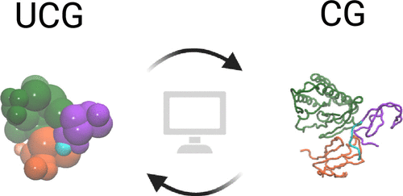
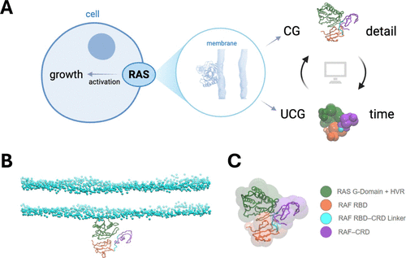
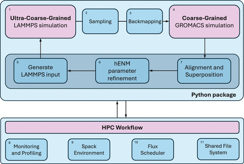
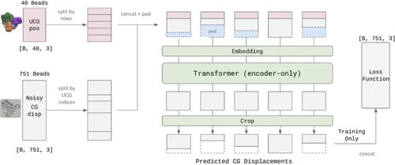
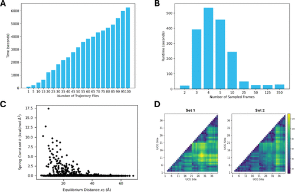
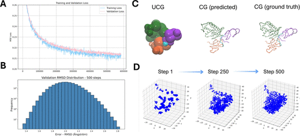
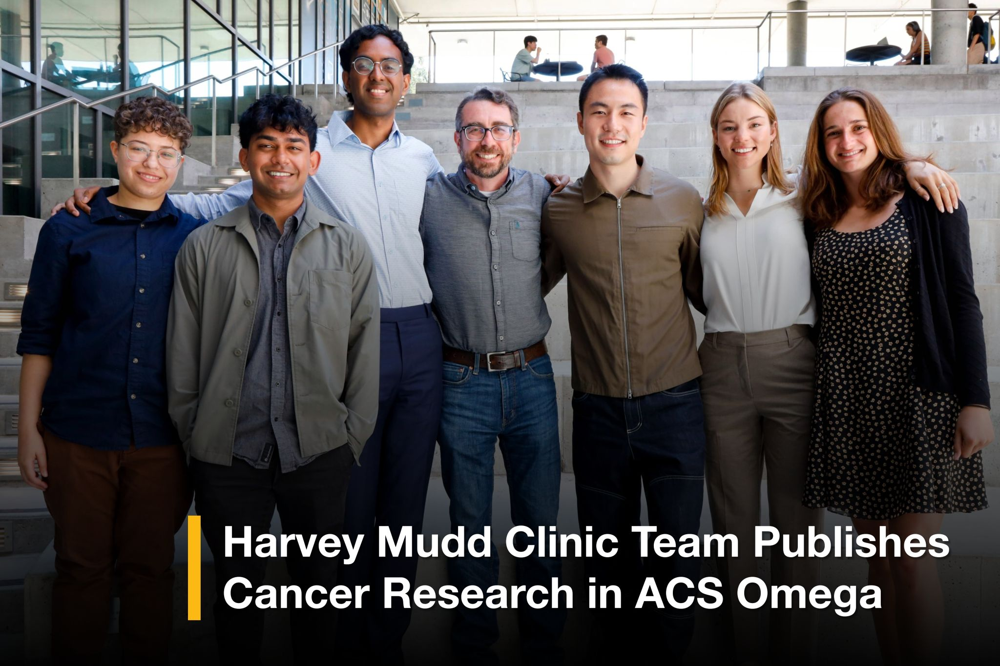

As the Product Manager for this multi-institutional capstone project, I led a cross-functional team to design, build, and deploy UCG-mini-MuMMI. This open-source Python ecosystem integrates Ultra-Coarse-Grained protein models and diffusion-based machine learning into an accessible, low-compute desktop workflow, lowering the technical and financial barriers for global cancer research labs.

// define
My first ever published paper, Integrating Ultra-Coarse-Grained Protein Models into Accessible Workflows for Multiscale Molecular Dynamics, published in ACS Omega. We were studying how proteins move and interact, which requires massive computational power. While high-resolution all-atom simulations capture fine details, they are too resource-heavy to run at a large scale, forcing scientists to rely on supercomputers.
The Problem: A Resource Bottleneck in Cancer Research
Prior work by Lawrence Livermore National Laboratory established MuMMI, a massive computational framework used to study RAS-RAF protein interactions, which are critical drivers in cancer development. However, MuMMI is highly resource-intensive, requiring high-performance supercomputing clusters to balance fine-grained and coarse-grained simulations.

Because of this heavy infrastructure reliance, smaller academic labs and independent research teams are effectively locked out of running these vital simulations. The core product challenge was to maximize the exploration of protein conformational space while drastically lowering the computational cost.
The PM Challenge: Bridging the Technical Divide
As the PM, my first task was defining the scope of a highly cross-functional project that involved undergraduate researchers, academic advisors, and senior scientists. The technical strategy required integrating a mathematical abstraction called heterogeneous elastic network modeling (hENM) into an automated, reproducible machine learning pipeline.
Our goal: create an end-to-end version of the MuMMI framework that didn’t require LLNL’s supercomputer, without sacrificing the biological accuracy of the protein simulations.

// design
Mapping the Multiscale Pipeline Shift
Transitioning from a supercomputer infrastructure to a local developer environment meant redefining the entire system architecture. We had to design an automated way to pass data between three completely different spatial resolutions:
We spent early strategy sessions wireframing the developer journey. We realized that forcing biophysicists to manually adjust bond coefficients between these scales would cause massive friction and lead to human error.
To solve this, we designed two core user-facing solutions:
The Automated Refinement Engine: a scalable framework that reads the physical fluctuations observed in high-resolution data and automatically calculates the structural bond coefficients for the lower-resolution UCG model.
The Generative Backmapping Experience: a machine learning pipeline that uses diffusion models to automatically reverse the abstraction process, accurately mapping ultra-coarse data back up into detailed structures.
// develop
Managing the Prototyping and Learning Curve
Our early machine learning prototypes struggled with structural stability during the backmapping phase. Standard generative models frequently produced physically impossible protein structures that violated basic chemical laws.
We shifted our development strategy toward a diffusion-based architecture. We trained our models to learn the precise spatial mappings between scales, forcing the generative output to adhere to real-world biophysical constraints.

To turn these isolated scripts into a cohesive ecosystem, we engineered a modular Python architecture:
The models we created offered promising results.


// deploy

Release and Impact
The final product was peer-reviewed and published in ACS Omega, establishing the validity of our low-compute alternative within the chemical and biological research communities.
By delivering UCG-mini-MuMMI, we successfully decoupled advanced protein conformational sampling from supercomputing clusters, packaging the framework into a scalable, open-source toolset available on GitHub.
Reflection
Acting as a Product Manager within a deeply scientific domain taught me how to translate abstract, mathematical concepts into tangible software features. By designing a workflow that automates both structural coefficient estimation and generative backmapping, we successfully delivered a tool that helps the scientific community focus on what matters most: accelerating cancer research.
The true success of this project came from having a great team. Even though we barely knew each other at the start of working together, we ended up becoming great friends.